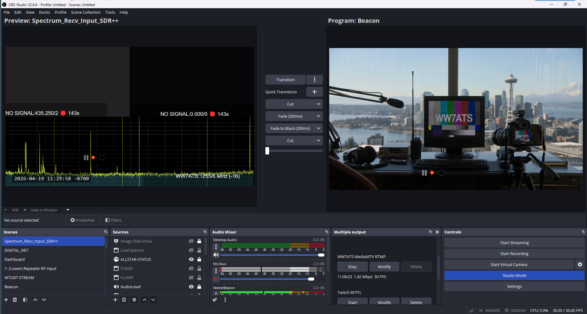
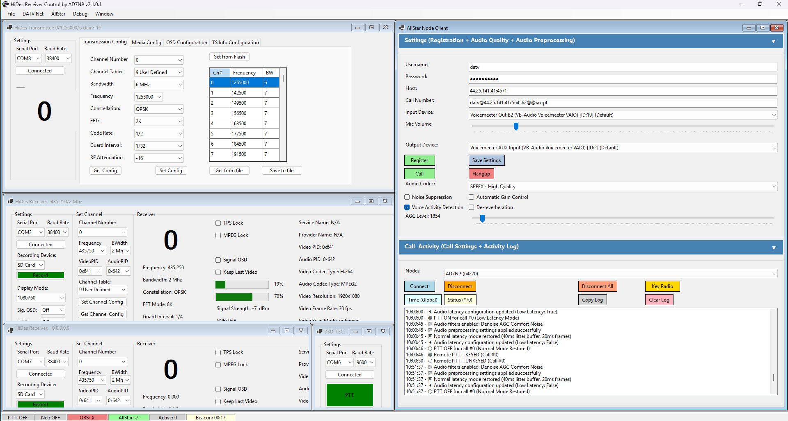
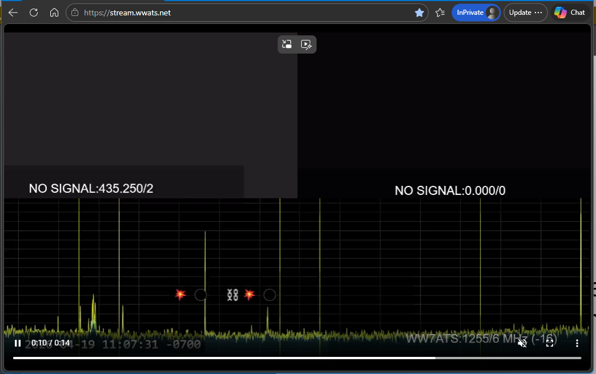

from DVB-T DATV Ingestion to Mobile RTMP Control Carlos Picoto Draft (conference-ready after template conversion)
Abstract
Amateur television (ATV) operators increasingly want to broadcast RF-derived video to the wider internet with a workflow that remains reliable under real-world conditions: unstable uplinks, short-lived publishing sessions, and operator-driven controls (e.g., push-to-talk). This paper describes an end-to-end streaming stack built around three practical components: (1) a desktop DVB-T DATV ingest and relay application (HiDesReceiver), (2) a cloud headend that translates and distributes media (MediaMTX + nginx on an Azure VM), and (3) a native operator client that supports a low-latency viewer and one-tap RTMP broadcasting (WW7ATS). We focus on engineering choices that reduce operational friction: protocol boundaries, secure credential handling, explicit connection-state UX, and monitoring hooks that integrate with the operational dashboard of a live amateur repeater. The system demonstrates how modern streaming infrastructure can be made robust and operator-friendly for small communities without requiring specialized streaming expertise.
Keywords: amateur television, DATV, RTMP, HLS, MediaMTX, low-latency streaming, SwiftUI, operational UX
Introduction
Amateur television is a gateway technology between RF video transmission and internet distribution. Traditional ATV workflows evolved for over-the-air viewing, but today operators want to preserve the spontaneity of live RF operation while enabling remote viewers. In practice, this means bridging heterogeneous systems:
- RF/receiver side (DVB-T DATV): ingest must handle consumer-grade devices and field conditions.
- Transport and distribution: viewers expect smooth playback, authentication, and resiliency.
- Operator side: the workflow must be simple enough for “push-to-broadcast” operation, not a streaming studio.
This paper presents the engineering of a complete stack developed for WW7ATS (Western Washington Amateur Television Society). The core goal is operational reliability under live conditions: the stack must tolerate short-lived publishing sessions, handle disconnect patterns without confusing operators, and make secure configuration easy.
The contribution is not a new streaming protocol. Instead, we contribute a system-level design and implementation approach for assembling a practical, low-latency amateur streaming pipeline from proven components.
Related Work
ATV streaming overlaps with broader work on low-latency streaming, adaptive delivery, and mobile broadcasting.
- RTMP and HLS: RTMP remains common for ingest and operator-driven publishing; HLS is widely supported for playback.
- Low-latency HLS: shortened segments and parts reduce perceived delay while remaining compatible with standard playback.
- Operator UX in live streaming: broadcast controls that map directly to connection state are widely recognized as crucial, especially for non-expert operators.
- Streaming relays/transcoders: MediaMTX provides lightweight translation and distribution with runtime APIs that can support monitoring.
Our focus is the integration of these ideas into a cohesive amateur-TV workflow.
System Overview
The stack architecture is summarized below.
Operationally, HiDesReceiver provides DVB-T DATV ingest, WW7ATS provides an operator-controlled RTMP push-to-transmit workflow, and the Azure MediaMTX headend remuxes into low-latency HLS for viewers.
The stack consists of:
- HiDesReceiver (desktop ingest/relay): a C# WinForms application for DVB-T DATV reception and relay/streaming into internet distribution paths.
- Azure headend (MediaMTX + nginx): a cloud VM that accepts RTMP/RTMPS ingest, remuxes to HLS for viewers, and terminates TLS for HTTPS delivery.
- WW7ATS operator client (native apps): a SwiftUI iOS/iPadOS/macOS application that combines (a) a stream viewer using native playback and (b) a push-to-transmit UI for one-tap RTMP publishing.
Operational requirements
From deployment experience, key requirements are:
- Short sessions are common. Operators may test quickly; the headend must avoid confusing state transitions.
- Ingest and playback must be decoupled. Publishing should not depend on viewer presence.
- Secure configuration must be simple. Stream keys must be stored securely and validated before any connection attempt.
- Monitoring must be human-friendly. Operators and net control need a reliable signal of what is actually happening.
Cloud Headend Engineering
The headend is hosted on an Azure VM running Ubuntu. It provides the protocol boundary between operator publishing and viewer playback.
MediaMTX runtime behavior
MediaMTX is configured to:
- expose an API (used by monitoring/automation),
- accept RTMP (
:1935) and RTMPS (:1936), - provide HLS output (origin on
:8888), - support additional listeners when needed (e.g., SRT),
- enforce path defaults so that a deterministic publisher policy can be applied.
In the WW7ATS deployment, HLS is remuxed into short segments/parts to reduce playback delay while remaining compatible with common clients.
Authentication and operational hooks
To support amateur-repeater workflows, the headend integrates with the operational dashboard:
- authentication is implemented via HTTP validation endpoints,
- connection events are sent to the legacy WW7ATS dashboard using runtime hooks (
runOnConnect/runOnDisconnect).
This integration makes the streaming pipeline observable as part of the live amateur event.
Operational robustness
We include a fallback “no signal” slate path via a looping FFmpeg publisher service. This prevents viewer confusion during transitions (e.g., when the operator stops transmitting).
Desktop Ingest: HiDesReceiver
HiDesReceiver complements the operator client by handling DVB-T DATV reception. While the paper does not attempt to re-derive codec or demodulation theory, it emphasizes an engineering principle:
In an amateur system, ingest tooling must tolerate hardware variability and still produce a consistent publishing stream.
The desktop application provides a pragmatic bridge between RF reception and an internet-friendly ingest protocol, allowing operators to reuse the same cloud headend and viewer experience.
Operator Client Engineering (WW7ATS)
WW7ATS is a native SwiftUI app designed around the operator’s workflow: watch the feed, prepare the camera, and transmit with a single action.
Viewer and transmitter in one UI
WW7ATS provides:
- a live stream viewer implemented with native HLS playback,
- a push-to-talk (PTT) transmit control that starts and stops an RTMP session,
- camera preview with picture-in-picture (PiP) and interaction controls (pinch-to-zoom, double-tap enlarge, and orientation-aware behavior).
A critical design choice is mapping operator gestures to networking state:
- connecting shows a progress state,
- successful publishing shows an “ON AIR” state,
- errors surface a clear retry action.
Streaming session management
The app’s implementation is organized around a stream manager responsible for:
- camera/microphone capture and encoding setup,
- session building for RTMP publishing,
- lifecycle transitions when PTT begins/ends.
The outbound stream quality is controlled via explicit presets (e.g., low/medium/high). The setting is applied at the start of a PTT session to avoid mid-stream renegotiation complexity.
Secure credentials and validation
The operator client stores the stream key in the OS keychain and does not persist it in plain application settings. Before starting a session, the app validates the server URL and stream key structure to prevent malformed connections.
Audio feedback prevention
To avoid audio feedback during transmission, playback is muted whenever PTT is active. The app also configures an appropriate audio session profile when transmitting so the operator can hear the repeater downlink while the microphone is live.
Evaluation and Deployment Observations
Instead of a traditional controlled experiment, the evaluation is based on deployment as part of an amateur repeater environment.
Stability under real-world session patterns
In practice, amateur streaming involves:
- brief test publishes,
- rapid connects/disconnects,
- mixed paths (e.g., test paths vs. the primary watch path).
The system remains usable because:
- the headend enforces deterministic path behavior,
- the operator client offers clear status chips and retry actions,
- operational hooks provide net control visibility.
Operational monitoring as a first-class feature
The stack includes automated monitoring and status reporting via the headend API and log inspection. This reduced troubleshooting time and allowed maintenance actions to be performed without ad-hoc debugging.
Security and usability tradeoffs
Keychain storage, URL validation, and clear error messaging improved reliability while reducing the likelihood of silent misconfiguration.
Implementation Figures
This section includes representative screenshots from the real deployment workflow.
- OBS Studio interface (Figure 1): supports live production by presenting operator previews and the broadcast program outputs in parallel.
- HiDes DATV controller + AllStar control (Figures 2-3): consolidates RF/transmitter settings, receiver status, and node/operator signaling into one working surface.
- Spectrum monitoring (Figure 4): provides immediate feedback for narrowband signal presence and the transition to “no signal” operations.




Lessons Learned
Across the development and deployment of HiDesReceiver, the Azure headend, and WW7ATS, we observed several repeatable engineering lessons:
- Design for short, imperfect sessions. Amateur systems should assume that “publish” is a transient action rather than a stable long-running stream.
- Separate operator UX from protocol mechanics. Operators need a small set of actionable states (idle, connecting, on air, failed).
- Make secure configuration frictionless. Storing stream keys securely and validating connection parameters prevents a large class of field failures.
- Integrate monitoring with the operational dashboard. Streaming is part of an event workflow, not just a technical pipeline.
Future Work
Potential improvements include:
- adding adaptive bitrate control aligned with operator presets and uplink conditions,
- extending ingest options (e.g., more robust support for alternative transport layers),
- integrating richer telemetry into operator UI (e.g., connection quality indicators based on API metrics),
- evaluating additional low-latency playback strategies.
Conclusion
This paper presented an end-to-end amateur television streaming stack that combines DVB-T DATV ingest, a cloud headend for RTMP-to-HLS distribution, and a native push-to-transmit operator client. The main engineering takeaway is that success in small-community live streaming depends on system integration: secure and validated configuration, explicit connection-state UX, deterministic publishing behavior at the headend, and operational monitoring hooks that fit real event workflows.
https://github.com/aler9/mediamtx
HaishinKit.swift, https://github.com/shogo4405/HaishinKit.swift
Apple SwiftUI Documentation, https://developer.apple.com/xcode/swiftui/
RFC 8216 (HTTP Live Streaming) overview and related HLS specifications.